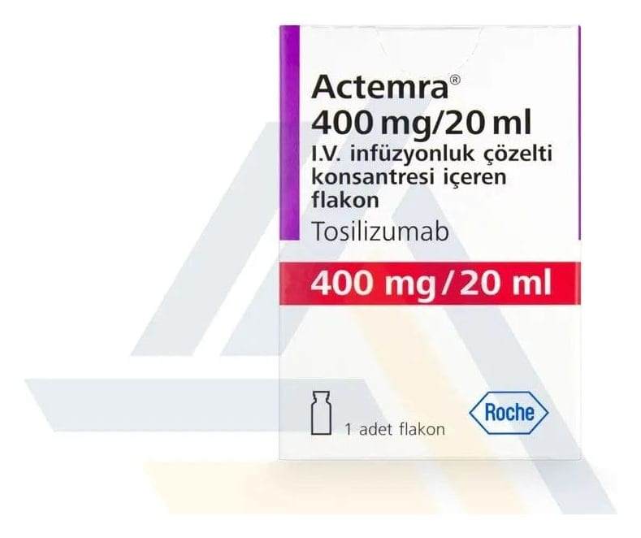

Actemra 400 mg/20 ml IV İnfüzyonluk Konsantre Çözelti, 1 Adet

Ne için kullanılır
KT · Bölüm 1 ACTEMRA infüzyonluk çözelti konsantresi, 20 mL’lik çözeltide 400 mg tocilizumab (20 mg/mL) içeren, butil kauçuk tıpalı, tek kullanımlık flakon şeklinde bulunmaktadır. Çözelti, berrak ve parlak arası, renksiz veya açık sarı renktedir. Tocilizumab, Çin Hamster yumurtalık hücrelerinden elde edilmiştir. ACTEMRA, 20 mL hacminde 1 ve 4 adet cam flakonlarda kullanıma sunulmaktadır.
ACTEMRA etkin madde olarak, interlökin-6 adı verilen bir tür proteinin (sitokin) etkilerini bloke eden bir monoklonal antikor olan tocilizumab’ı içerir. Sitokin vücutta iltihaplanmaların oluşmasında rol oynar ve bunun bloke edilmesi bu iltihaplanmaların azalmasına yardımcı olur. ACTEMRA önceki tedavilerinden fayda görmemiş olan yetişkin hastalarda, vücudun kendi bağışıklık sisteminin oluşturduğu (otoimmün) bir hastalık olan, orta ila şiddetli romatoid artrit tedavisinde kullanılır. ACTEMRA eklemlerdeki ağrı ve şişlik gibi belirtilerin azalmasına yardımcı olur ve ayrıca günlük işlerinizdeki performansınızı artırır. ACTEMRA’nın hastalığınız nedeniyle eklemlerdeki kıkırdak ve kemiklerde oluşan hasarı yavaşlattığı ve günlük aktivitelerinizi yapabilme becerinizi arttırdığı gösterilmiştir. ACTEMRA genellikle başka bir romatoid artrit ilacı olan metotreksat ile birlikte kullanılır. Ancak doktorunuz metotreksatın uygun olmadığını düşünüyorsa, ACTEMRA’yı tek başına da kullanabilirsiniz.
ACTEMRA ayrıca, bir veya daha fazla eklemde ağrı ve şişmeye ve de hastada ateş ve döküntüye neden olan, enflamatuvar bir hastalık olarak bilinen, sistemik juvenil idiopatik artritli, daha önce ağrı ve enflamasyonu önleyen ilaçlar olan non steroid antienflamatuvar ve tüm vücuda etkili kortikosteroid isimli ürün grubundaki tedavileri kullanmış ancak yeterli yanıt almamış, 2 yaşındaki ve 2 yaşından daha büyük çocukların tedavisinde metotreksat (MTX) ile birlikte kullanılır. Doktorunuz metotreksatın uygun olmadığını düşünüyorsa, çocuğunuzda ACTEMRA’yı tek başına da kullanabilir.
ACTEMRA ayrıca, bir veya daha fazla eklemde ağrı ve şişmeye neden olan, enflamatuvar bir hastalık olarak bilinen, poliartiküler juvenil idiopatik artritli 2 yaşındaki ve 2 yaşından daha büyük çocukların tedavisinde kullanılır. ACTEMRA, poliartiküler juvenil idiopatik artrit belirtilerinin iyileşmesi için kullanılır. Metotreksat (MTX) ile birlikte veya tek başına kullanılabilir.